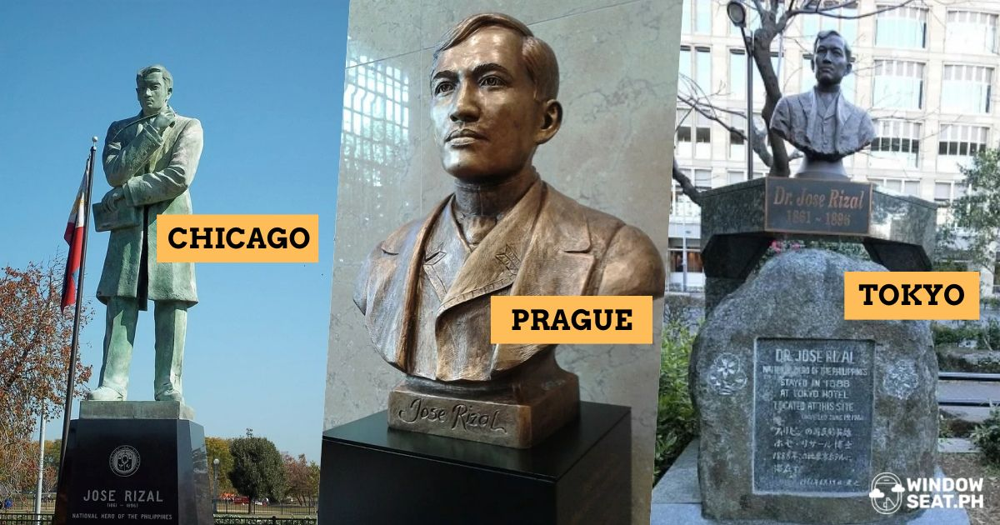

Introduction
Rizal Day, celebrated every December 30, commemorates the life and contributions of Dr. Jose Rizal, the Philippines’ national hero, who fought for reform and the empowerment of his countrymen.
Celebrations and Memorials
Ceremonies are held at Rizal Park and in cities nationwide, honoring his ideals and dedication to the country. Rizal Day reflects the importance of education, nationalism, and reform.